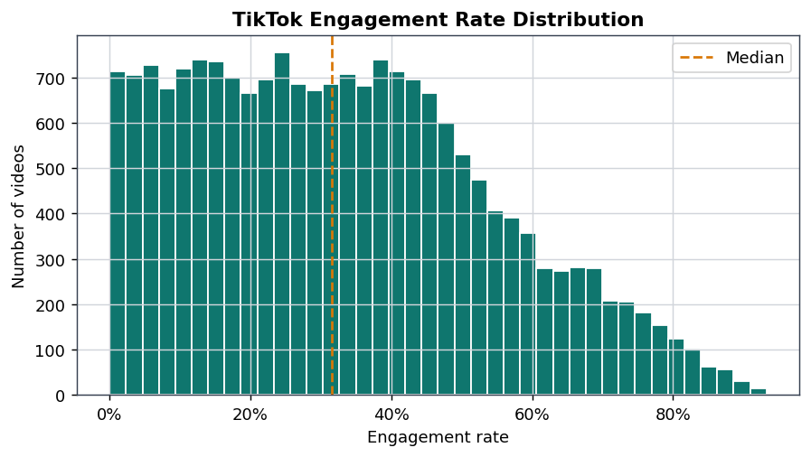
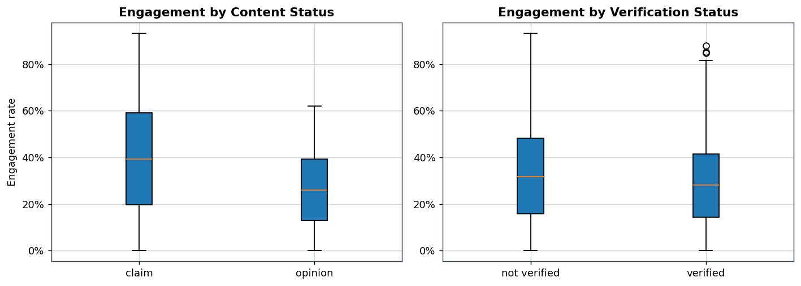
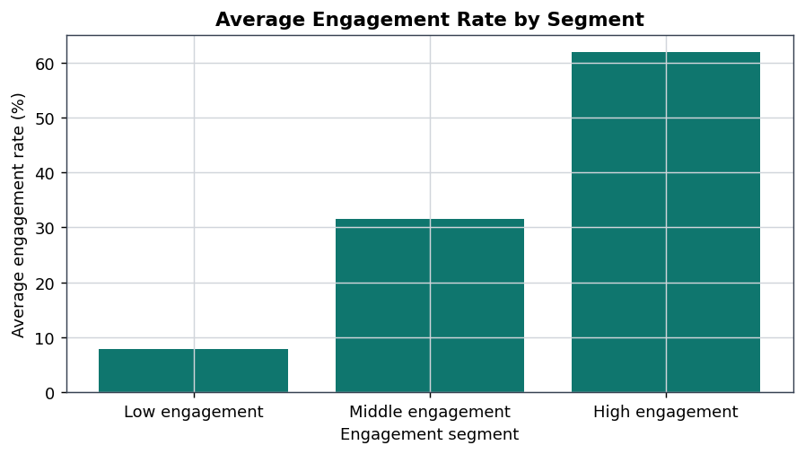
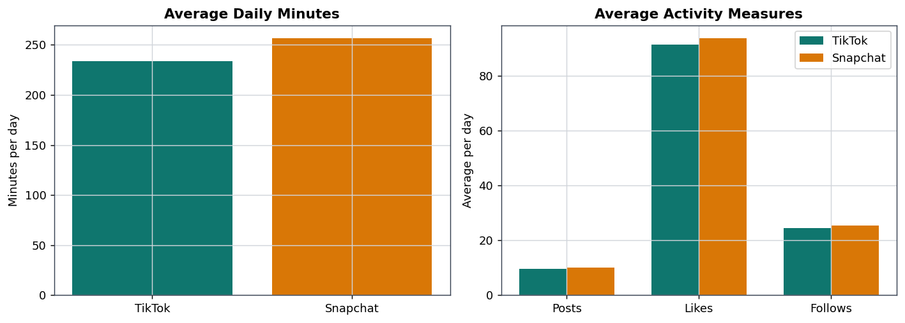

A comparative analysis of how TikTok and Snapchat use data, user engagement, advertising mechanisms, and innovation to create value and compete within the digital platform economy.
TikTok and Snapchat compete for user attention and advertising revenue, but they create value through different platform strategies. TikTok is strongly associated with algorithmic content discovery and personalization, while Snapchat focuses more on communication, friend networks, visual interaction, and augmented reality.
The project combines detailed TikTok video-level information with a smaller cross-platform usage dataset. This allows deeper TikTok content analysis together with a limited TikTok-Snapchat comparison.
The main dataset supports detailed analysis of TikTok engagement, video characteristics, and creator-related variables.
The second dataset is filtered to TikTok and Snapchat and supports a higher-level comparison of shared user activity measures.
Missing values, duplicates, invalid numerical values, and categorical formats were checked before carrying out descriptive and comparative analysis.
Welch independent-sample t-tests, Pearson correlations, group comparisons, and ANOVA were used to evaluate patterns in the available data.
Statistical findings were connected to engagement, platform strategy, advertising logic, innovation, and competitive positioning.
Likes, shares, comments, and views directly define the engagement rate. For this reason, they are not treated as independent predictors of engagement rate. The final analysis instead focuses on non-circular comparisons involving content status, creator characteristics, video duration, and download rate.
The cleaned TikTok dataset had an average engagement rate of approximately 33.19%.
The median engagement rate was approximately 31.57%, indicating that the central TikTok video in the sample generated roughly one-third engagement relative to views.
Download rate showed a strong positive Pearson correlation with engagement rate and was statistically significant at p < .001.
Video duration showed almost no relationship with engagement and was not statistically significant.
The cleaned TikTok dataset allows engagement to be compared across several variables that are not direct components of the engagement-rate formula.
Videos classified as claims had higher average engagement than opinion videos. The difference was statistically significant at p < .001.
Verified creators had an average engagement rate of approximately 28.91%. Non-verified creators showed a higher average engagement rate in the available sample.
Engagement differed significantly across active, banned, and under-review author groups according to the ANOVA result.
The lower engagement segment had an average engagement rate of approximately 7.84%.
The middle segment had an average engagement rate of approximately 31.48%.
The high-engagement segment achieved an average engagement rate of approximately 61.97%.

Distribution of engagement rates across the cleaned TikTok video dataset.

Comparison of engagement across content status and creator verification groups.

Average engagement rates across low, middle, and high engagement segments.

Comparison of shared user activity measures in the cross-platform dataset.
Snapchat showed slightly higher sample averages across several shared user activity measures, but the observed differences were not statistically significant.
After filtering the shared social-media dataset to TikTok and Snapchat, 297 observations remained for comparative analysis.
None of the four shared measures produced a statistically significant TikTok-Snapchat difference at α = 0.05.
TikTok and Snapchat operate within the same digital attention economy, but their mechanisms of value creation and differentiation are strategically different.
TikTok's strategic position is strongly associated with algorithmic content discovery. User interactions provide signals that can support personalization, recommendations, creator feedback, and advertising inventory.
Snapchat is better understood as a communication-oriented platform centered on friend networks, visual interaction, private messaging, and augmented reality experiences.
Snapchat showed slightly higher sample averages across several usage measures, but the available comparison data did not provide statistically significant evidence of consistent platform-level differences.
TikTok and Snapchat create value through different mechanisms, but both ultimately compete for user attention, engagement, advertising demand, and long-term platform relevance.
The TikTok dataset contains substantially richer content-level information than the Snapchat comparison data. As a result, the strongest analytical conclusions are TikTok-specific.
The results should be interpreted as descriptive business analytics supported by statistical evidence. The study does not establish causal relationships and is not designed as a predictive machine-learning project.
View the complete analysis for data preparation, exploratory analysis, statistical testing, TikTok engagement patterns, TikTok-Snapchat comparisons, business interpretation, and final conclusions.